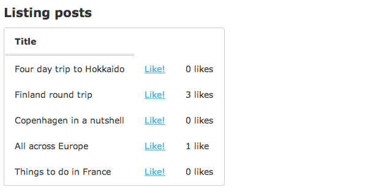
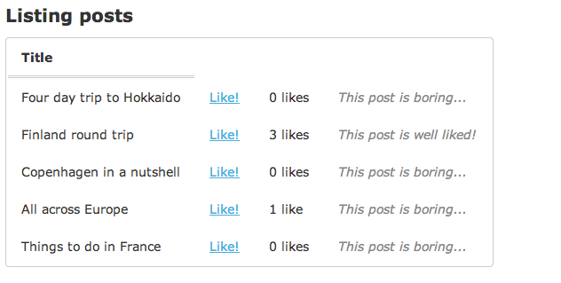

ChiliThe spicy extension framework for Rails

Have you ever wanted to test out a new feature on only a subset of users? Did that implementation end up being lots of if/else statements embedded in the main code? If so, Chili can help.
Chili is built on top of Rails Engines and Deface and allows you to conditionally add new/modify existing views, while leaving the main code untouched.
Usage
The easiest way to explain how Chili works is through an example. Lets say we have a simple site were people can submit posts about their travel experiences:

It is hard to tell which posts are interesting so we decide to test out a new social feature where users can "like" posts and see which are popular.
We want to first test out this feature on a set of beta testers before deciding whether to release it to everyone.
One way of doing it would be something like this:
app/views/posts/_post.html.erb
<tr>
<td><%= post.title %></td>
<% if logged_in? && current_user.beta_tester? %>
<td><%= link_to 'Like!', likes_path(like: { post_id: post }), method: 'post' %></td>
<% end %>
</tr>
However, adding conditionals in the code like this can quickly become unmaintainable. And what about the likes_controller? How do we make sure that only beta testers can access this?
Chili makes it easier to do this in a clean and unobtrusive fashion!
Creating a new chili extension
First add Chili to your main app's gemfile and run bundle:
gem 'chili'
Then generate a new extension named "social":
$ rails g chili:extension social
This will:
- Create the directory
vendor/chili/social_extensioncontaining the basic structure for the extension - Add a reference to the main app gemfile:
group :chili do
gem 'social_extension', path: 'vendor/chili/social_extension'
end
Since the extension is mounted as a gem we restart the app:

The message at the top is injected into the layout by the extension and shows us that it is working.
Modifying view templates in main app
Chili uses Deface overrides to dynamically modify existing view templates (see Deface docs for details).
The message shown is an example of how this works.
For now, let's remove the example override and add our own. We will start out by adding a 'Like' link next to each post. Our app's posts/_post partial looks like this:
app/views/posts/_post.html.erb
<tr>
<td><%= post.title %></td>
</tr>
We can modify this at runtime by adding an override to the extension, mirroring the path to the partial in the main app:
vendor/chili/social_extension/app/overrides/posts/_post/like_actions.html.erb.deface
<!-- insert_bottom 'tr' -->
<td><%= link_to 'Like!', '#' %></td>
Deface's "magical comment" <!-- insert_bottom 'tr' --> looks for tr tags in the partial and appends the html written under the comment. Refreshing the page shows the result:
Define who can see the extension
By default a newly generated extension will be active for everyone. Let's change this so that only beta testers can see the links by editing the active_if block in lib/social_extension.rb
vendor/chili/social_extension/lib/social_extension.rb
module SocialExtension
extend Chili::Activatable
active_if { logged_in? && current_user.beta_tester? }
end
Now the links will be hidden unless a user with a beta_tester boolean set to true logs in.
The context of the active_if block is the application controller so you can use any methods available to that.
You could also use something like Rollout within active_if for more granular control
Adding new resources
The links don't actually do anything yet. Let's add the controller and model code needed to make this work.
Navigate to the extension's folder and run:
$ rails g scaffold Like post:references
$ rake social_extension:install:migrations
$ rake db:migrate
The new resource will be automatically mounted as an isolated engine in the main app at /chili/social_extension/likes.
Only when active_if is true is this URL available, otherwise it will return a 404!
We can now modify the override and add the full path to the links:
vendor/chili/social_extension/app/overrides/posts/_post/like_actions.html.erb.deface
<!-- insert_bottom 'tr' -->
<td><%= link_to 'Like!', social_extension.likes_path(like: { post_id: post }), method: 'post' %></td>
Note that since the new resource is added as an isolated engine in the main app you will have to prefix paths with the name of the extension.
Modifying existing models
We now have a working like button, only available to beta users, but it would be nice if we could also see how many likes each post has.
We will need to go through the Post model but we don't want to add the has_many association directly to the main code.
Instead we can extend the Post model inside the extension. From within the extension's folder run:
$ rails g model Post --migration=false
Edit the generated file to make it inherit from the original Post model and add the association:
vendor/chili/social_extension/app/models/social_extension/post.rb
module SocialExtension
class Post < ::Post
has_many :likes
end
end
This will now allow you to access the has_many association by going through the namespaced model:
vendor/chili/social_extension/app/overrides/posts/_post/like_actions.html.erb.deface
<!-- insert_bottom 'tr' -->
<td><%= link_to 'Like!', social_extension.likes_path(like: { post_id: post }), method: 'post' %></td>
<td><%= pluralize post.becomes(SocialExtension::Post).likes.size, 'like' %></td>
Now each post shows how many likes it has received:
You can also add new methods to models in this way. Writing becomes each time may get cumbersome so in that case using tap can clean things up:
vendor/chili/social_extension/app/overrides/posts/_post/like_actions.html.erb.deface
<!-- insert_bottom 'tr' -->
<% post.becomes(SocialExtension::Post).tap do |post| %>
<td><%= link_to 'Like!', social_extension.likes_path(like: { post_id: post }), method: 'post' %></td>
<td><%= pluralize post.likes.size, 'like' %></td>
<td class='remark'><%= post.well_liked? ? 'This post is well liked!' : 'This post is boring...' %></td>
<% end %>
Stylesheets/javascripts
Finally let's add some styling to the extension:
vendor/chili/social_extension/app/assets/stylesheets/social_extension/likes.css.scss
.remark {
font-weight:normal;
font-style:italic;
color:#888;
}
Files added to the extension's app/assets/social_extension/javascripts|stylesheets directory are automatically injected into the layout using a pre-generated override:
vendor/chili/social_extension/app/overrides/layouts/application/assets.html.erb.deface
<!-- insert_bottom 'head' -->
<%= stylesheet_link_tag 'social_extension/application' %>
<%= javascript_include_tag 'social_extension/application' %>
This gives us the final result, only visible to logged in beta users:
Please give Chili a try and let me know of any bugs/feature requests on GitHub!